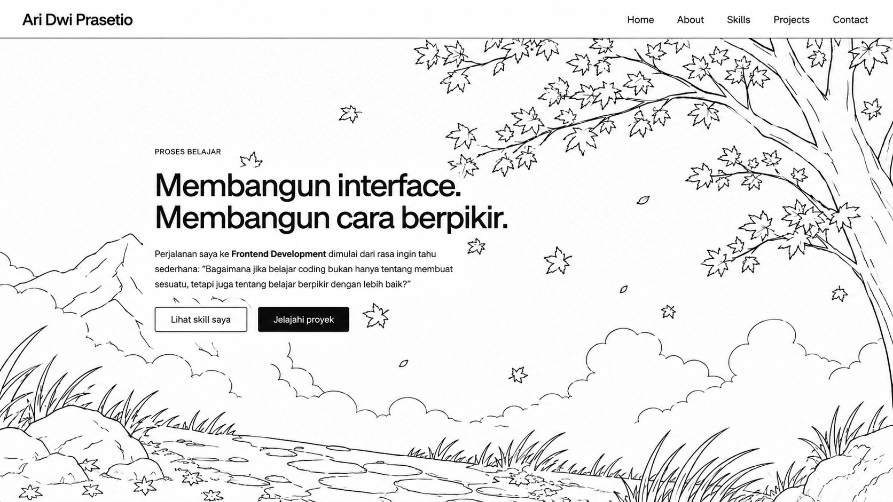
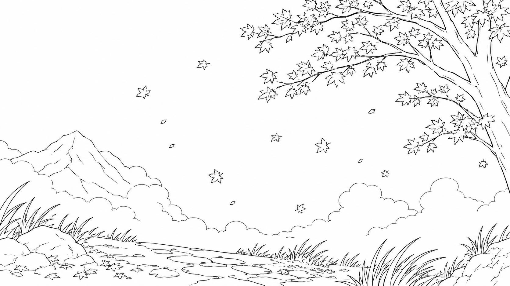
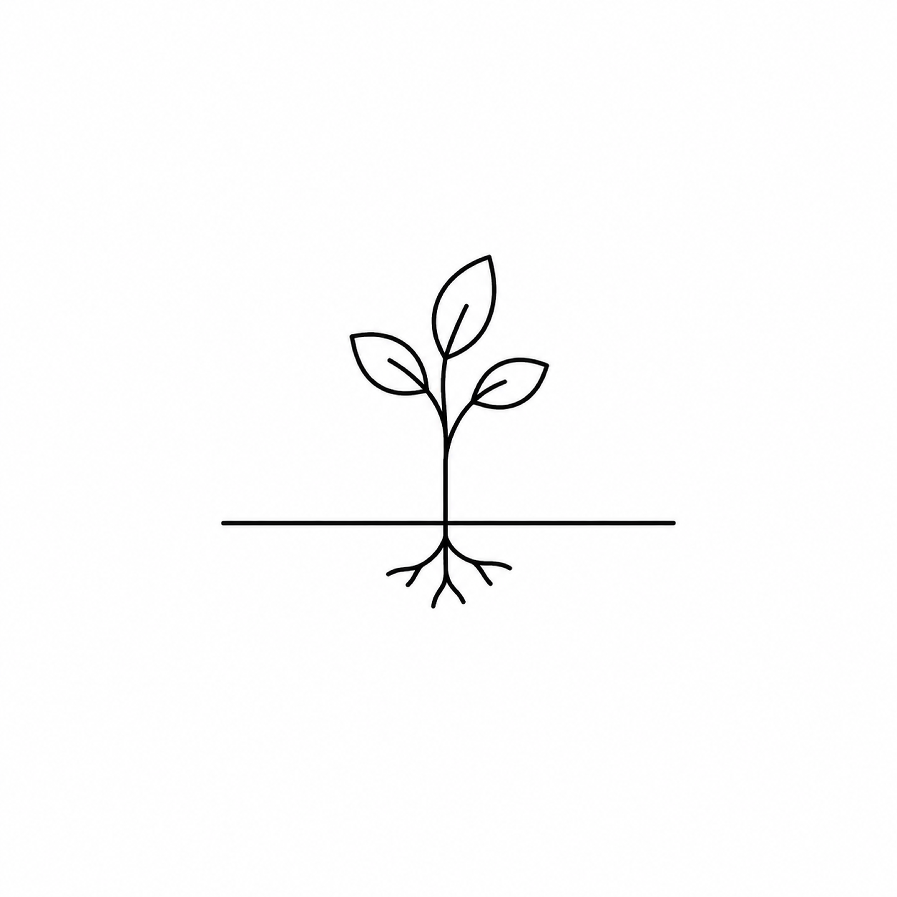
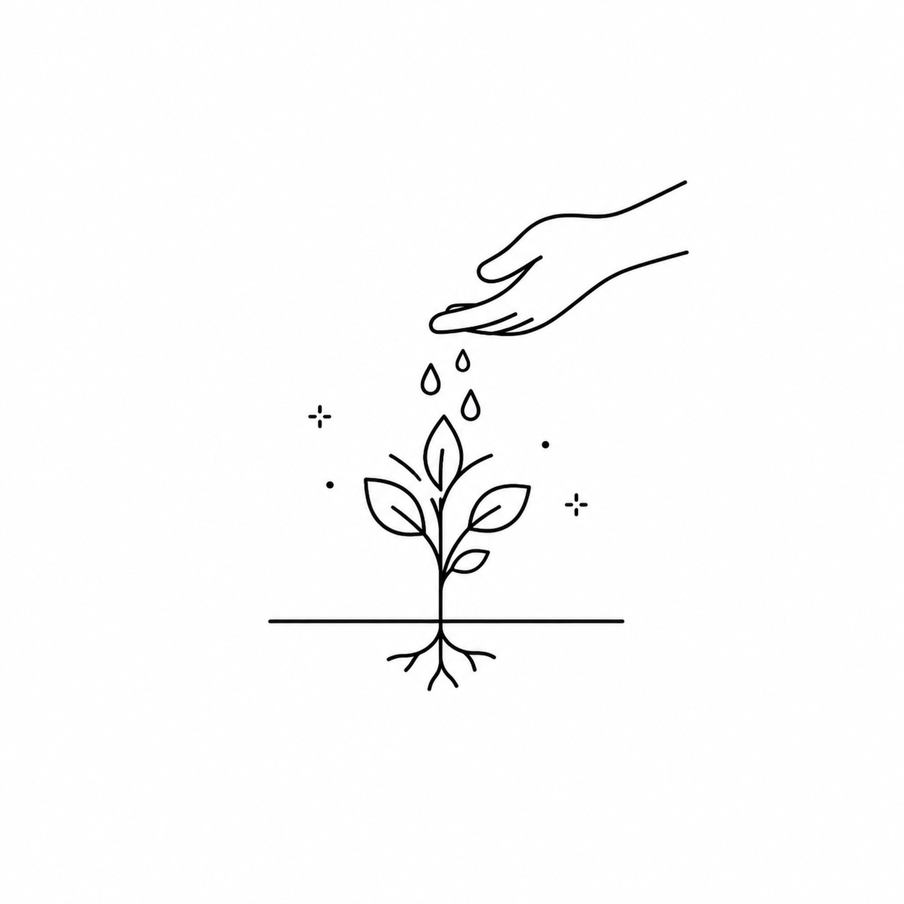
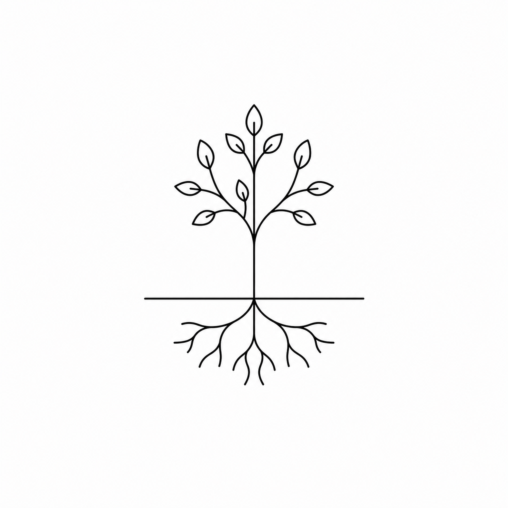
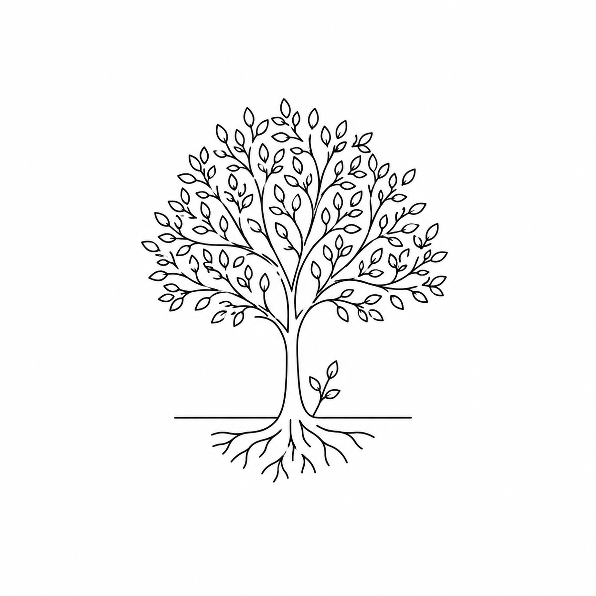

Personal Portfolio
Proyek perdana untuk memvalidasi fondasi HTML, CSS, dan aksesibilitas dasar. Dari sinilah saya belajar mengarahkan diri pada penyelesaian, bukan kesempurnaan.
Source Code
Proses belajar
Perjalanan saya ke Frontend Development dimulai dari rasa ingin tahu sederhana: “Bagaimana jika belajar coding bukan hanya tentang membuat sesuatu, tetapi juga tentang belajar berpikir dengan lebih baik?”
Tentang

Latar belakang saya bukan dari dunia teknologi. Saya seorang teknisi WiFi lapangan, lulusan SMK Teknik Kendaraan Ringan — dan sedang membangun jalan baru menuju Frontend Development.

Belajar secara otodidak dari fondasi — HTML, CSS, responsive design, accessibility, hingga JavaScript — dengan AI sebagai pendamping untuk riset, memahami konsep, dan code review.

Frontend, bagi saya, adalah titik temu antara logika di balik sebuah interface dan cara manusia berinteraksi dengannya.

Portfolio ini adalah dokumentasi perjalanan — bukan kumpulan hasil akhir, tapi catatan tentang bagaimana saya belajar, membangun, menemukan masalah, dan berkembang.
Skills
Semantic Markup dan layout Flex/Grid, dengan desain minimalis.
Keyboard navigation, color contrast, dan struktur yang ramah screen reader.
Layout yang tetap rapi di berbagai ukuran layar, mobile-first.
Sedang mempelajari sintaks, tipe data, dan topik pemula lainnya.
Proyek

Proyek perdana untuk memvalidasi fondasi HTML, CSS, dan aksesibilitas dasar. Dari sinilah saya belajar mengarahkan diri pada penyelesaian, bukan kesempurnaan.
Source Code